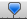

Animation 选项卡
Animation Clips are the smallest building blocks of animation in Unity. They represent an isolated piece of motion, such as RunLeft, Jump, or Crawl, and can be manipulated and combined in various ways to produce lively end results (see Animation State Machines, Animator Controller, or Blend Trees). You can select Animation Clips from imported FBX data.
单击包含动画剪辑的模型时，将显示以下属性：
Inspector 窗口的 Rig 选项卡包含四个区域：
(A) Asset-specific properties. These settings define import options for the entire Asset.
(B) Clip selection list. You can select any item from this list to display its properties and preview its animation. You can also define new clips.
(C) Clip-specific properties. These settings define import options for the selected Animation Clip.
(D) Animation preview. You can playback the animation and select specific frames here.
特定于资源的属性

这些属性适用于此资源中定义的所有动画剪辑和约束：
| 属性： | 功能： | |
|---|---|---|
| Import Constraints | 从此资源导入约束。 | |
| Import Animation | 从此资源导入动画。 注意：如果禁用此选项，则会隐藏此页面上的所有其他选项，并且不会导入任何动画。 |
|
| Bake Animations | Bake animations created using IK or Simulation to forward kinematic keyframes. Only available for Autodesk® Maya®, Autodesk® 3ds Max® and Cinema 4D files. |
|
| Resample Curves | 将动画曲线重新采样为四元数值，并为动画中的每个帧生成一个新的四元数关键帧。 默认情况下会启用此选项。 仅当原始动画中的关键点之间存在插值问题时，才应禁用此选项来保留最初创作的动画曲线。 仅当导入文件包含欧拉曲线时才会显示此选项。 |
|
| Anim. Compression | 导入动画时要使用的压缩类型。 | |
| Off | Disable animation compression. This means that Unity doesn’t reduce keyframe count on import. Disabling animation compression leads to the highest precision animations, but slower performance and bigger file and runtime memory size. It is generally not advisable to use this option - if you need higher precision animation, you should enable keyframe reduction and lower allowed Animation Compression Error values instead. | |
| Keyframe Reduction | Reduce redundant keyframes on import. If enabled, the Inspector displays Animation Compression Errors options. This affects both file size (runtime memory) and how curves are evaluated. Only for Generic Animation Type rigs. |
|
| Keyframe Reduction and Compression | Reduce keyframes on import and compress keyframes when storing animations in files. This affects only file size: the runtime memory size is the same as Keyframe Reduction. If enabled, the Inspector displays Animation Compression Errors options. Only for Legacy Animation Type rigs. |
|
| Optimal | Let Unity decide how to compress, either by keyframe reduction or by using dense format. If enabled, the Inspector displays Animation Compression Errors options. Only for Generic and Humanoid Animation Type rigs. |
|
| Animation Compression Errors | 仅当启用 Keyframe Reduction 或 Optimal 压缩时可用。 | |
| Rotation Error | Set the error tolerance (as an angle in degrees) for rotation curve compression. Unity uses this to determine whether or not it can remove a key on a rotation curve. This represents the minimum angle between the original rotation value and the reduced value: Angle(value, reduced) < RotationError
|
|
| Position Error | Set the error tolerance (as a percentage) for position curve compression. Unity uses this to determine whether or not it can remove a key on a position curve. For more information, see Setting error tolerance for key reduction on position and scale curves. | |
| Scale Error | Set the error tolerance (as a percentage) for scale curve compression. Unity uses this to determine whether or not it can remove a key on a scale curve. For more information, see Setting error tolerance for key reduction on position and scale curves. | |
| Animated Custom Properties | 导入您指定为自定义用户属性的任何 FBX 属性。 Unity 在导入 FBX 文件时仅支持一小部分属性（例如转换、旋转、缩放和可见性）。但是，您可以借助 extraUserProperties 成员，在导入器脚本中指定标准 FBX 属性（如用户属性）来处理这些属性。在导入期间，Unity 会将所有这些指定属性传递给资源后处理器 (Asset postprocessor)，就像“真实”用户属性一样。 |
|
Setting error tolerance for key reduction on position and scale curves
Set the error tolerance percentage to determine whether or not Unity can remove a key on a position or scale curve as a strategy for animation compression.
When you set the Anim. Compression property to “Keyframe Reduction” or “Optimal”, Unity compares the original curve to what the curve looks like after removing a specific keyframe and applies this test:
OriginalValue - ReducedValue > OriginalValue * percentageOfError
Unity removes a keyframe if the delta between the original value and the reduced value is less than the original value multiplied by the error tolerance percentage.
Note that the Unity compares the distances between the three curve components (that is, it compares distance(x,y,z) ), and also per component ( distance(x), distance(y), and then distance(z) ).
This example demonstrates how Unity evaluates a reduction on the y-axis using an error tolerance of 10%:

Keyframe A has a value of 11.2:
Keyframe B has a value of 11.1:
The resulting reduced curve looks like this:
Keyframe A is not reduced because:
- The distance between the original and reduced value is
D = 11.2 - 10 = 1.2. - The error margin is
E = 10% * 11.2 = 1.12 - D > E
Keyframe B is reduced because 11.1 - 10 < 10% * 11.1:
- The distance between the original and reduced value is
D = 11.1 - 10 = 1.11 - The error margin is
E = 10% * 11.1 = 1.11 - D = E
Note that this method has a limitation when using high values that vary only slightly. Moving the Scene 1000 units away results in essentially the same animation but located far from 0.

In this case, both keyframes are reduced.
Keyframe A is reduced because:
- The distance between the original and reduced value is
D = 1011.2 - 1010 = 1.2 - The error margin is
E = 10% * 1011.2 = 101.12
Keyframe B is reduced because 11.1 - 10 < 10% * 11.1:
- The distance between the original and reduced value is
D = 11.1 - 10 = 1.11 - The error margin is
E = 10% * 1011.1 = 101.11
Higher values require a much larger difference between the original and reduced values for keyframes to remain in the reduced curve. Keyframe A has a value of 1100 and is discarded; keyframe B has a value of 1112 and remains:

剪辑选择列表

在 Rig 选项卡的此区域中可执行以下任务：
- 从列表中选择一个剪辑以显示特定于剪辑的属性。
- 在剪辑预览面板中播放所选剪辑。
- 使用添加 (
+) 按钮为此文件创建新剪辑。 - 使用删除 (
-) 按钮删除所选的剪辑定义。
特定于剪辑的属性
Rig 选项卡的此区域显示以下特性：
(A) The (editable) name of the selected clip
(B) The animation clip timeline
(C) Clip properties to control looping and pose
(D) Expandable sections for: defining curves, events, masks, and motion roots; and viewing messages from the import process
您可以为此资源中定义的每个动画剪辑单独设置以下属性：
| 属性： | 功能： | |
|---|---|---|
| A 区域（可编辑名称） | ||
| The take in the source file to use as a source for this animation clip. This is what defines a set of animation as separated in Motionbuilder, Autodesk® Maya® and other 3D packages. Unity can import these takes as individual clips. You can create them from the whole file or from a subset of frames. |
||
| B 区域（时间轴特性） | ||
| 您可以通过在时间轴上拖动起始和结束标记来定义每个剪辑的帧范围。 | ||
| Start | 剪辑的起始帧。 | |
| End | 剪辑的结束帧。 | |
| C 区域（循环和姿势控制） | ||
| Loop Time | 播放动画剪辑并在到达结尾时重新开始。 | |
| Loop Pose | 无缝循环运动。 | |
| Cycle Offset | 循环动画在其他时间开始时的周期偏移。 | |
| Root Transform Rotation | ||
| Bake into Pose | 将根旋转烘焙到骨骼移动。禁用此选项将会存储为根运动。 | |
| Based Upon | 根旋转的基础。 | |
| Original | 保持源文件中的原始旋转。 | |
| Root Node Rotation | Use the rotation of the root node. Only available for the Generic Animation Type. |
|
| Body Orientation | 保持上半身朝前。 仅适用于 Humanoid 动画类型。 |
|
| Offset | 根旋转偏移（以度为单位）。 | |
| Root Transform Position (Y) | ||
| Bake into Pose | 将垂直根运动烘焙到骨骼移动。禁用此选项将会存储为根运动。 | |
| Based Upon (at Start) | 垂直根位置的基础。 | |
| Original | 保持源文件中的垂直位置。 | |
| Root Node Position | 使用垂直根位置。 仅适用于 Generic 动画类型。 |
|
| Center of Mass | 保持质心与根变换位置对齐。 仅适用于 Humanoid 动画类型。 |
|
| Feet | 保持双脚与根变换位置对齐。 仅适用于 Humanoid 动画类型。 |
|
| Offset | 垂直根位置偏移。 | |
| Root Transform Position (XZ) | ||
| Bake into Pose | 将水平根运动烘焙到骨骼移动。禁用此选项将会存储为根运动。 | |
| Based Upon | 水平根位置的基础。 | |
| Original | 保持源文件中的水平位置。 | |
| Root Node Position | 使用水平根变换位置。 仅适用于 Generic 动画类型。 |
|
| Center of Mass | 保持与根变换位置对齐。 仅适用于 Humanoid 动画类型。 |
|
| Offset | 水平根位置偏移。 | |
| Mirror | 在此剪辑中进行左右镜像。 仅当动画类型 (Animation Type) 设置为 Humanoid 时才显示。 |
|
| Additive Reference Pose | 启用此选项可以设置附加动画层基础参考姿势的帧。在时间轴编辑器中可以看到蓝色标记：  |
|
| Pose Frame | 输入一个帧编号以用作参考姿势。还可以在时间轴中拖动蓝色标记来更新此值。 仅当启用 Additive Reference Pose 的情况下才可用。 |
|
| D 区域（可展开部分） | ||
| Curves | 展开此部分可管理导入的剪辑上的动画曲线。 | |
| Events | Expand this section to manage animation events on imported clips. | |
| Mask | 展开此部分可管理对导入剪辑的遮罩。 | |
| Motion | 展开此部分可管理根运动节点的选择。 | |
| Import Messages | 展开此部分可查看有关如何导入动画的详细信息，包括可选的重定向质量报告 (Retargeting Quality Report)。 | |
创建剪辑实质上是定义动画段的起点和终点。为了使这些剪辑循环，应修整这些剪辑，使它们尽可能匹配所需循环的第一帧和最后一帧。
动画导入警告
如果在动画导入过程中出现任何问题，动画导入检视面板 (Animations Import Inspector) 顶部会显示警告：
这些警告并不一定意味着您的动画未导入或不正常。可能仅表示导入的动画与源动画看起来略有不同。
要查看更多信息，请展开 Import Messages 部分：
在这种情况下，Unity 提供了 Generate Retargeting Quality Report 选项，通过启用该选项可以查看有关重定向问题的更多具体信息。
您可能会看到的其他警告详细信息包括：
- 此文件中的默认骨骼长度与源 Avatar 中的值不同。
- 此文件中的中间骨骼默认旋转与源 Avatar 中的值不同。
- 源 Avatar 层级视图与此模型中的层级视图不匹配。
- 此动画具有将被丢弃的转换动画。
- 人形动画具有将被丢弃的中间变换和旋转。
- 具有将被丢弃的缩放动画。
这些消息表明 Unity 导入动画并将其转换为自己的内部格式时忽略了原始文件中的某些数据。这些警告实质上告诉您重定向的动画可能与源动画不完全匹配。
注意：Unity 不支持除常量 (constant) 以外的前外推 (pre-extrapolate) 和后外推 (post-extrapolate) 模式（也称为前无限 (pre-infinity) 和后无限 (post-infinity) 模式），因此会在导入时将这些模式转换为常量。
动画预览

Rig 选项卡的预览区域提供以下特性：
(A) The name of the selected clip
(B) The 2D preview mode button (switches between orthographic and perspective camera)
(C) The pivot and mass center display button (switches between displaying and hiding the gizmos)
(D) The Avatar selector (change which GameObject will preview the action)
(E) The play/pause button
(F) The playback head on the preview timeline (allows scrubbing back and forth)
(G) The animation preview speed slider (move left to slow down; right to speed up)
(H) The playback status indicator (displays the location of the playback in seconds, percentage, and frame number)
(I) The Tag bar, where you can define and apply Tags to your clip
(J) The AssetBundles bar, where you can define AssetBundles and Variants
- 2017.2 中添加了 Materials 选项卡 NewIn20172